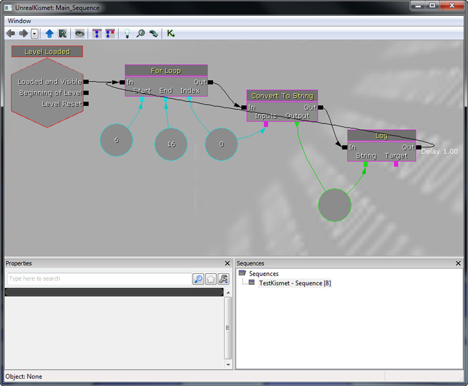

UDN
Search public documentation:
DevelopmentKitGemsForLoopKismetNodeCH
English Translation
日本語訳
한국어
Interested in the Unreal Engine?
Visit the Unreal Technology site.
Looking for jobs and company info?
Check out the Epic games site.
Questions about support via UDN?
Contact the UDN Staff
日本語訳
한국어
Interested in the Unreal Engine?
Visit the Unreal Technology site.
Looking for jobs and company info?
Check out the Epic games site.
Questions about support via UDN?
Contact the UDN Staff
创建 For 循环 Kismet 节点
最后一次测试是在2011年4月份的UDK版本上进行的。
可以与 PC 和 iOS 兼容
概述
Unrealscript
class SeqAct_ForLoop extends SequenceAction;
// 作为循环开头部分使用的数量
var() int Start;
// 作为循环结束部分使用的数量
var() int End;
// 循环每次的增量大小。通常使用正数
var() int Increment;
// 遍历的时候包括结尾部分
var() bool IncludeEnd;
// 在索引对于关卡设计师而言有用的情况下的索引输出
var int Index;
// 内部索引
var int InternalIndex;
// 以前设置过这个内部索引吗？
var bool HasSetInternalIndex;
event Activated()
{
// 检查我们是否具有要遍历的范围
if (Start == End || Increment <= 0)
{
return;
}
if (!HasSetInternalIndex)
{
InternalIndex = Start;
HasSetInternalIndex = true;
}
if (Start < End)
{
Index = InternalIndex;
if (InternalIndex < End || (IncludeEnd && InternalIndex <= End))
{
ActivateOutputLink(0);
InternalIndex += Increment;
}
else
{
InternalIndex = Start;
}
}
else if (Start > End)
{
Index = InternalIndex;
if (InternalIndex > End || (IncludeEnd && InternalIndex >= End))
{
ActivateOutputLink(0);
InternalIndex -= Increment;
}
else
{
InternalIndex = Start;
}
}
}
defaultproperties
{
Increment=1
InternalIndex=0
bAutoActivateOutputLinks=false
HasSetInternalIndex=false
ObjName="For Loop"
ObjCategory="Misc"
InputLinks(0)=(LinkDesc="In")
OutputLinks(0)=(LinkDesc="Out")
VariableLinks.Empty
VariableLinks(0)=(ExpectedType=class'SeqVar_Int',LinkDesc="Start",PropertyName=Start)
VariableLinks(1)=(ExpectedType=class'SeqVar_Int',LinkDesc="End",PropertyName=End)
VariableLinks(2)=(ExpectedType=class'SeqVar_Int',LinkDesc="Increment",bHidden=true,PropertyName=Increment)
VariableLinks(3)=(ExpectedType=class'SeqVar_Int',LinkDesc="Index",bWriteable=true,PropertyName=Index)
}
如何使用
